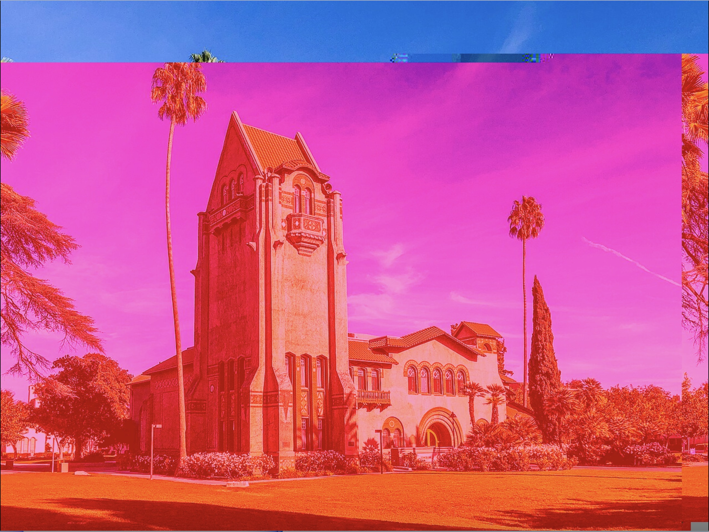
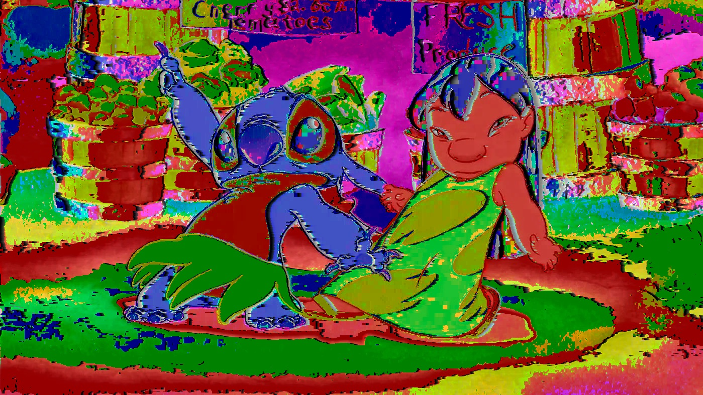
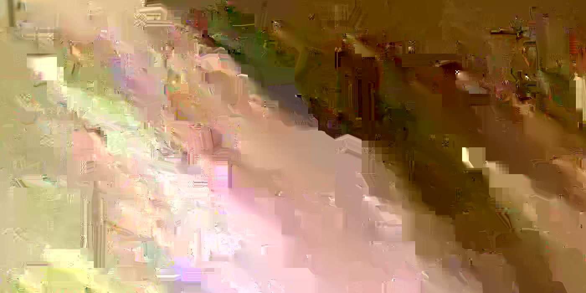
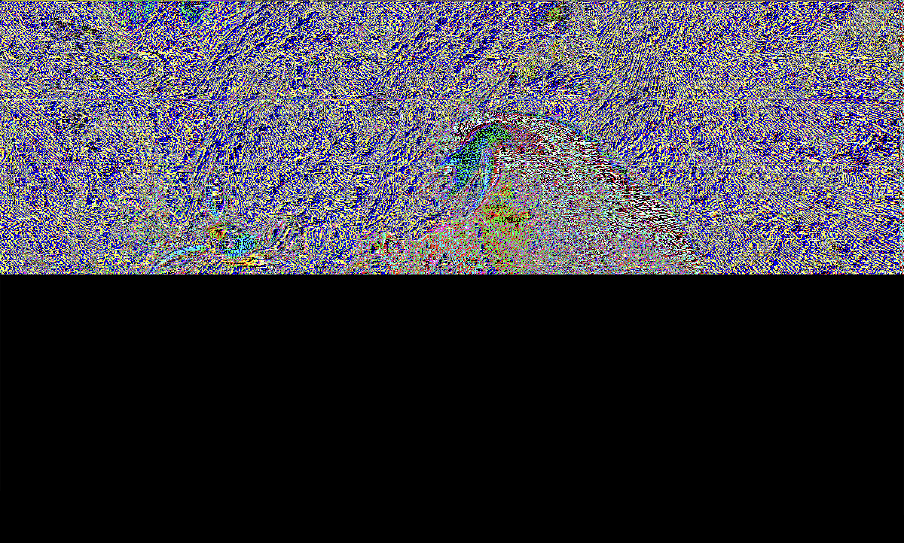

This type of digital/new media art is called "glitch art." It is a type of art where people take a wide variety of images and make "glitches" found in them into art. These glitches are made on purpose using such technologies/softwares as Textedit, Audacity, and Adobe Photoshop. It was made in February 2025.
For my glitch series, I made four unique pieces of glitch art, with two themes. One glitch art has a theme about the importance of San Jose State University's tower hall, which serves as a landmark for the campus and the California State University System as a whole. It is partially glitched to remind us how college/university may still be a bumpy road, but the degrees earned is well worth the effort.

As for the other three glitch art pieces, they dig deeper into friendships as depicted in media, each symbolizing the basic elements of friendship. When "glitching" friendships, we can understand how complex they can be. Overall, these glitches served as an artistic analysis of friendships in media.
The first image (made using the echo effect Audacity) has psychedelic colors while the image itself is still recognizable, represents the fully flourishing friendship, or outright familial bond, between the title characters of Lilo & Stitch (2002). Their bond is a very colorful one, full of ups and downs, but they always stick to each other no matter what goes on.

The second image in the middle (made with TextEdit), a glitchy and indecipherable mess, represents how friendships are not all perfect and cam fall apart or nearly do so, which has sometimes occurred on shows such as Friends (1994 - 2004) as well as movies. While not all friendships may be restored due a variety of reasons (such as personality clashes or differing views on certain subjects), other friendships can be developed or revived through effort and dedication.

The third image on the bottom (made using a combination of Audacity with default effect and TextEdit) is a partial cut-out colorful glitch, illustrating how a friendship can develop or be restored, as seen in Open Season (2006). Despite having an initial fallout in the third act of the film, Boog and Elliot resolve their issues and work to defend their forest friends from hunters, allowing their bond to come back stronger than before.
